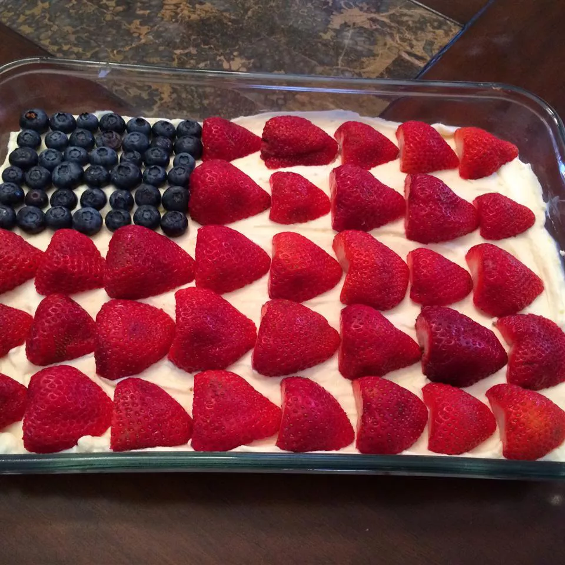

No-Bake Cheesecake Flag Cake

Description
You can make this lovely, sweet treat for 4th July or any patriotic holiday without turning on the oven! Besides the taste and light mousse-like texture, I think your guests will enjoy the iconic stars and stripes design provided by the fresh blueberries and strawberries.
Ingredients
Crust:
- 1 ½ cups finely crushed graham cracker crumbs
- ¼ cup white sugar
- 2 tablespoons unsweetened cocoa powder
- 6 tablespoons butter, melted
Filling:
- 1 cup cream cheese at room temperature
- 1 cup mascarpone cheese at room temperature
- 2 teaspoons grated lemon zest
- 2 teaspoons lemon juice
- 1 teaspoon vanilla extract
- ⅓ cup white sugar
- 1 ¼ cups cold heavy whipping cream
- 20 large fresh strawberries, hulled and halved lengthwise, or as needed
- 24 large fresh blueberries, or as needed
Directions
- Combine graham cracker crumbs, 1/4 cup sugar, cocoa powder, and melted butter in a bowl until mixture is thoroughly combined and crumbly.
- Transfer crust mixture to a 9x11-inch baking dish. Press crust into bottom of dish until smooth and even. Cover dish with plastic wrap and refrigerate until set, about 30 minutes.
- Mix cream cheese and mascarpone cheese in a bowl until thoroughly combined. Stir in lemon zest, lemon juice, and vanilla extract into mixture.
- Whisk 1/3 cup sugar into whipping cream in a separate metal or glass bowl until the cream is fluffy and forms soft peaks. Add whipped cream to the cream cheese mixture and gently whisk until filling is soft, fluffy, and well combined.
- Spoon filling on top of the graham cracker crust, spreading and smoothing the top. Tap the pan gently on a work surface several times to settle the crust and filling. Cover pan tightly with plastic wrap and refrigerate until chilled and set, at least 3 hours.
- Starting at the bottom long edge of the cake, arrange strawberry halves in a horizontal line with the pointed bottoms of the strawberry halves pointing to the right. Start a second stripe of strawberry halves at the top right of the cake, arranging strawberries with the bottoms pointing right in a line stretching about 2/3 of the length of the cake.
- Continue to make strawberry stripes, starting about 3/4 inch up from the bottom stripe and laying down 3 more stripes stretching the full length of the cake. Make 1 more line of strawberries beneath the short stripe to leave a square space for the blue field of stars.
- Lay a line of blueberries with the blossom ends pointing up in the upper left square space. Continue to lay down blueberries in lines, berries touching the previous line, until the square is filled with blueberries. Cut cake into squares to serve.